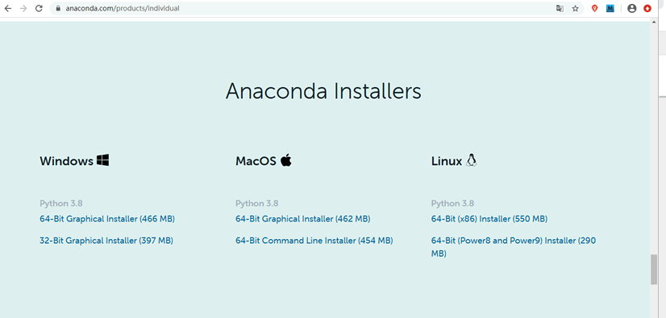
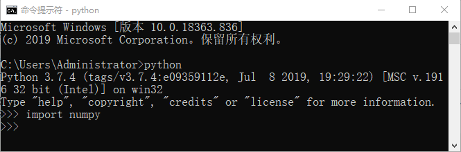

NumPy下载与安装
NumPy 是 Python 的第三方扩展包，但它并没有包含在 Python 标准库中，因此您需要单独安装它。本节介绍如何在不同的操作系统上安装 NumPy。
使用 Python 包管理器
注意：在 Windows 下直接使用 pip 安装 SciPy 会发生报错，需要我们解决 SciPy 的依赖项问题，所以不推荐使用
首先我们要知道什么是 SciPy 栈？其实它是一个科学计算软件包的集成平台，这类平台囊括了常用的数值计算与机器学习库，比如 NumPy、Matplotlib、SciPy 库、IPython 等，并且它可以自动解决包之间的依赖问题。通过安装一个集成平台就可以实现上述所有软件包的安装，何乐而不为呢
下面介绍几种常用的 SciPy 栈，主要有以下几种：
Anaconda（官网下载：https://www.anaconda.com/）是一个开源的 Python 发行版，它包含了 NumPy、SciPy 等180多个科学包及其依赖项。除了支持 Windows 外，也支持 Linux 和 Mac 系统。Anaconda 就目前应用较为广泛，因此建议安装。
Python(x,y)（下载地址：https://python-xy.github.io/）是一款基于 Python、Qt （图形用户界面）和 Spyder （交互式开发环境）开发的软件，主要用于数值计算、数据分析和数据可视化等工程项目，目前只支持 Python 2 版本。
Pyzo（下载地址：https://pyzo.org/）是一个跨平台 Python IDE，基于 Python 3 编写，非常适合科学计算，它设计的宗旨就是为了简化和提供效率。
WinPython（下载地址：https://sourceforge.net/projects/winpython/files/）免费的 Python 发行版，包含了常用的科学计算包与 Spyder IDE 开发环境，但仅支持 Windows 系统。
最后验证是否安装成功，如下所示：
打开 Python 交互解释器 ，并导入 NumPy 模块，如下图 2 所示如果未出现错误提示，则表示已安装成功。
Windows系统安装
在 Windows 系统下安装 NumPy 有两种常用方式，下面分别对其进行介绍。使用 Python 包管理器
pip来安装 NumPy，是一种最简单、最轻量级的方法。只需执行以下命令即可：pip install numpy
在实际项目中， NumPy 通常与 SciPy 程序包一起使用，SciPy 可以看做对 NumPy 库的扩展，它在 NumPy 的基础上又增加了许多工程计算函数。因此将它们同时安装是一个不错的选择。但如果你只想针对 NumPy 进行学习，可以不用考虑这种安装方法。注意：在 Windows 下直接使用 pip 安装 SciPy 会发生报错，需要我们解决 SciPy 的依赖项问题，所以不推荐使用
pip安装 SciPy 程序包。下面介绍如何使用 SciPy 栈安装。首先我们要知道什么是 SciPy 栈？其实它是一个科学计算软件包的集成平台，这类平台囊括了常用的数值计算与机器学习库，比如 NumPy、Matplotlib、SciPy 库、IPython 等，并且它可以自动解决包之间的依赖问题。通过安装一个集成平台就可以实现上述所有软件包的安装，何乐而不为呢
下面介绍几种常用的 SciPy 栈，主要有以下几种：
Anaconda（官网下载：https://www.anaconda.com/）是一个开源的 Python 发行版，它包含了 NumPy、SciPy 等180多个科学包及其依赖项。除了支持 Windows 外，也支持 Linux 和 Mac 系统。Anaconda 就目前应用较为广泛，因此建议安装。
Anaconda 的下载文件约 500 MB 左右，你可以选择安装 Miniconda，它是 Anaconda 的轻巧版，只需 40 余兆。

图1：Anaconda官网下载图（点击看高清图）
图1：Anaconda官网下载图（点击看高清图）
Python(x,y)（下载地址：https://python-xy.github.io/）是一款基于 Python、Qt （图形用户界面）和 Spyder （交互式开发环境）开发的软件，主要用于数值计算、数据分析和数据可视化等工程项目，目前只支持 Python 2 版本。
Pyzo（下载地址：https://pyzo.org/）是一个跨平台 Python IDE，基于 Python 3 编写，非常适合科学计算，它设计的宗旨就是为了简化和提供效率。
WinPython（下载地址：https://sourceforge.net/projects/winpython/files/）免费的 Python 发行版，包含了常用的科学计算包与 Spyder IDE 开发环境，但仅支持 Windows 系统。
MacOSX系统安装
Mac 系统虽然自带包管理器Homebrew，但是它不能下载 NumPy 等科学计算包，所以需要使用下列方式安装：$ pip3 install numpy scipy matplotlib -i https://pypi.tuna.tsinghua.edu.cn/simple
注意：-i 参数后指的是国内下载源，加快下载的速度。Linux系统安装
在 Linux 系统中，您可以选择只单独安装 NumPy 一个软件包，也可以同时安装多个软件包。下面介绍了不同的 Linux 发行版具体的安装命令，如下所示：1) Ubuntu/Debian
对于 Ubuntu/Debian 系统，可以在终端上执行以下命令：$ sudo apt-get install python-numpy python-scipy python-matplotlib ipython ipython-notebook python-pandas python-sympy python-nose
2) Redhat/CentOS
在 Redhat/CentOS 系统上执行以下命令来安装 NumPy 与其它科学计算包：$ sudo yum install numpy scipy python-matplotlib ipython python-pandas sympy python-nose注意：不同的软件包之间必须使用“一个空格”隔开。
最后验证是否安装成功，如下所示：
打开 Python 交互解释器 ，并导入 NumPy 模块，如下图 2 所示如果未出现错误提示，则表示已安装成功。

图2：Numpy安装成功
图2：Numpy安装成功
注意：这里是以 Windows 系统为例进行验证的，Linux 验证方式与其相同。
关注公众号「站长严长生」，在手机上阅读所有教程，随时随地都能学习。内含一款搜索神器，免费下载全网书籍和视频。

微信扫码关注公众号

{kind=link}